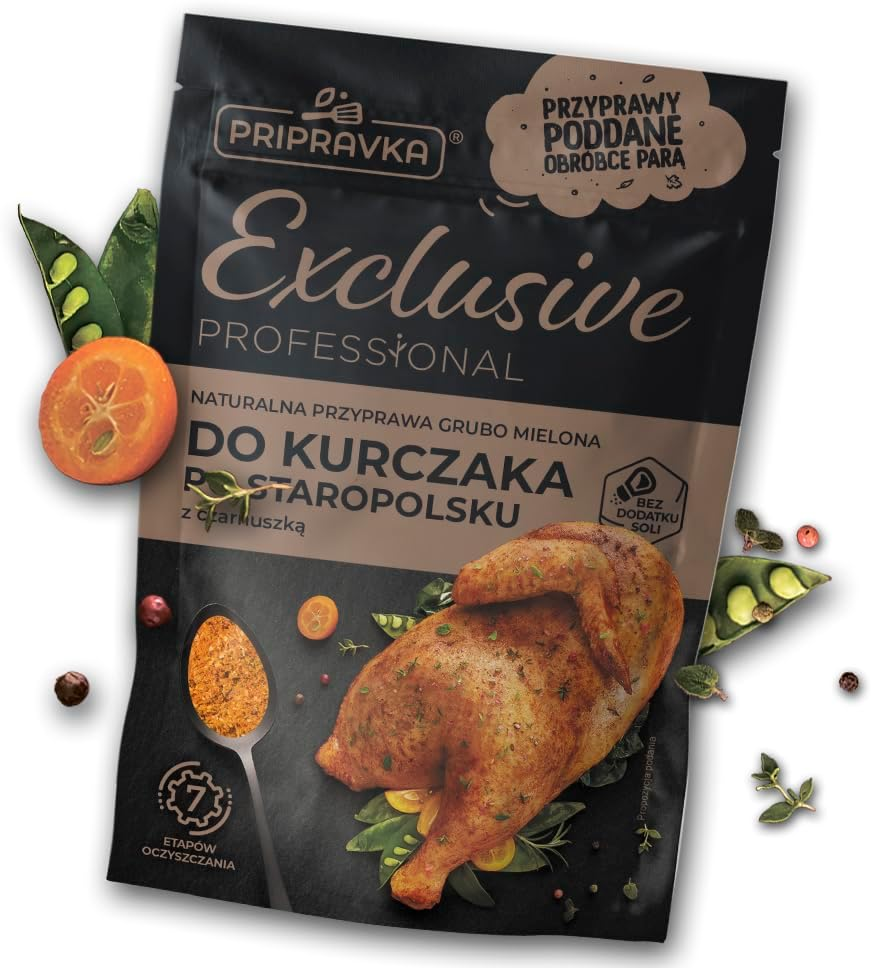

Exclusive Professional
B0GWQ6SCNR

Pripravka Przyprawa do Kurczaka po Staropolsku 40g Exclusive Professional z Czarnuszką – Naturalna Mieszanka Przypraw, Sterylizacja Parowa, Czosnek Majeranek Chili, Doypack Zip
Amazon| Sekcja | Polski tekst | Український переклад |
|---|---|---|
| Amazon title | Pripravka Przyprawa do Kurczaka po Staropolsku 40g Exclusive Professional z Czarnuszką – Naturalna Mieszanka Przypraw, Sterylizacja Parowa, Czosnek Majeranek Chili, Doypack Zip | Pripravka приправа до курки по-старопольськи 40 г Exclusive Professional з чорнушкою - натуральна суміш спецій, парова стерилізація, часник майоран чилі, Doypack Zip |
| Opis z karty | Naturalna Mieszanka Przypraw, Sterylizacja Parowa, Czosnek Majeranek Chili, Doypack Zip | натуральна суміш спецій, парова стерилізація, часник майоран чилі, Doypack Zip |
| Kontrola | Sprawdzić zgodność Amazon-title, ASIN, serii i zdjęcia opakowania. | Перевірити відповідність Amazon-title, ASIN, серії та фото упаковки. |
OCR з пачки / переклад
Rozpoznany tekst z opakowania
PRIPRAVKA Przyprawy poddane obróbce parą Exclusive Professional Naturalna przyprawa grubo mielona Do kurczaka po staropolsku z czarnuszką Bez dodatku soli 7 etapów oczyszczania Propozycja podania 40 g
Український переклад OCR
PRIPRAVKA Спеції, оброблені парою Exclusive Professional Натуральна крупномелена приправа До курки по-старопольськи з чорнушкою Без додавання солі 7 етапів очищення Приклад подавання 40 г
Аудит OCR: внесено основні великі написи, видимі на головному фото Amazon. Дуже дрібні службові написи та частина QR-пояснень потребують ручної перевірки у збільшенні.